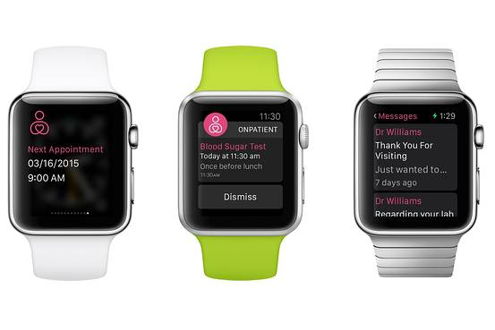
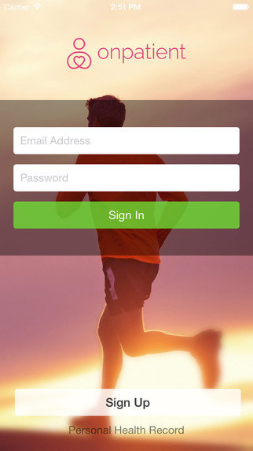
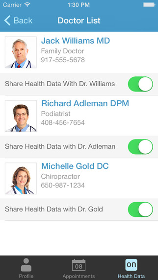

I led the development of this app during my time at drcrhono. We were excited about the capabilities of the Apple Watch in terms of what it can do to help patients communicate with doctors. Both the HIPAA-Compliant iPhone and Watch apps allow patients and doctors to pass messages back and forth, view appointments, and set medication reminders.



The reception from the medical community was extraordinary and its feature in the Wall Street Journal and Apple App Store was truly an honor. Really excited to see how doctors and patients will uitilize this app.